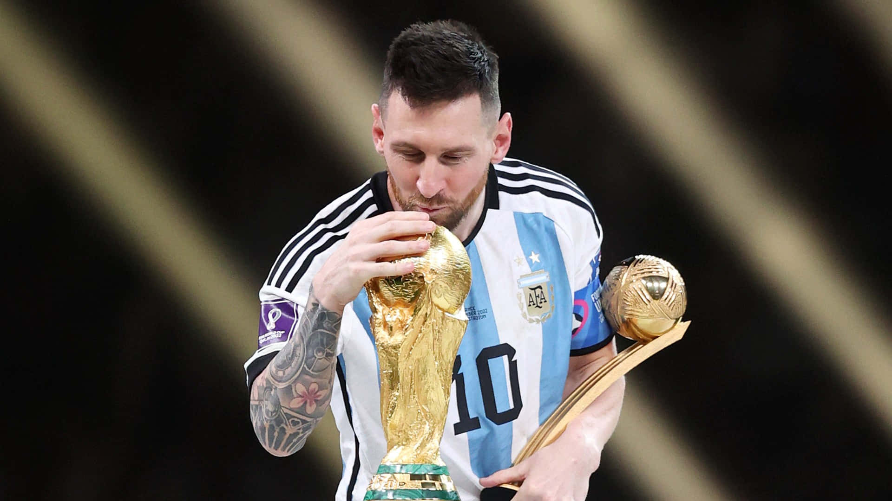

El fútbol en Argentina es más que fútbol
Es pasión, es cultura, es identidad. Es el grito de gol en la garganta del pueblo, es la bandera en la ventana, el potrero en la esquina y la camiseta que se hereda de generación en generación. En Argentina, el fútbol no se juega... se vive.


Detrás de cada camiseta, hay una historia. En el fútbol argentino, cada
club representa una identidad, una forma de vivir, de hablar y de
sentir. No es solo la pelota: son los códigos, las promesas en la
esquina, las lágrimas en la tribuna y los abrazos eternos después de un
gol. En estas tierras, el fútbol no se ve: se respira. Se hereda, se
discute, se sufre y se ama como parte de la vida misma.
En esta página te mostraremos por qué el fútbol argentino es único en el mundo. Vas a recorrer su historia, conocer a sus protagonistas, revivir momentos inolvidables y descubrir cómo este deporte se convirtió en una pasión que atraviesa generaciones. Desde los clubes más emblemáticos hasta las hinchadas más fieles, cada rincón de esta web late con el ritmo intenso del fútbol criollo
En esta página te mostraremos por qué el fútbol argentino es único en el mundo. Vas a recorrer su historia, conocer a sus protagonistas, revivir momentos inolvidables y descubrir cómo este deporte se convirtió en una pasión que atraviesa generaciones. Desde los clubes más emblemáticos hasta las hinchadas más fieles, cada rincón de esta web late con el ritmo intenso del fútbol criollo
Campeones del Fútbol Argentino (1931–2025)
| Año | Campeón | Subcampeón |
|---|---|---|
| 1931 | Boca Juniors | River Plate |
| 1932 | River Plate | Boca Juniors |
| 1933 | Independiente | San Lorenzo |
| 1934 | San Lorenzo | Independiente |
| 1935 | Racing Club | Huracán |
| 1936 | Vélez Sarsfield | Racing Club |
| 1937 | Huracán | Vélez Sarsfield |
| 1938 | Newell's | Rosario Central |
| 1939 | Estudiantes LP | Argentinos Jrs |
| 1940 | Lanús | Banfield |
| 1941 | Boca Juniors | River Plate |
| 1942 | River Plate | Boca Juniors |
| 1943 | Independiente | San Lorenzo |
| 1944 | San Lorenzo | Independiente |
| 1945 | Racing Club | Huracán |
| 1946 | Vélez Sarsfield | Racing Club |
| 1947 | Huracán | Vélez Sarsfield |
| 1948 | Newell's | Rosario Central |
| 1949 | Estudiantes LP | Argentinos Jrs |
| 1950 | Lanús | Banfield |
| 1951 | Boca Juniors | River Plate |
| 1952 | River Plate | Boca Juniors |
| 1953 | Independiente | San Lorenzo |
| 1954 | San Lorenzo | Independiente |
| 1955 | Racing Club | Huracán |
| 1956 | Vélez Sarsfield | Racing Club |
| 1957 | Huracán | Vélez Sarsfield |
| 1958 | Newell's | Rosario Central |
| 1959 | Estudiantes LP | Argentinos Jrs |
| 1960 | Lanús | Banfield |
| 1961 | Boca Juniors | River Plate |
| 1962 | River Plate | Boca Juniors |
| 1963 | Independiente | San Lorenzo |
| 1964 | San Lorenzo | Independiente |
| 1965 | Racing Club | Huracán |
| 1966 | Vélez Sarsfield | Racing Club |
| 1967 | Huracán | Vélez Sarsfield |
| 1968 | Newell's | Rosario Central |
| 1969 | Estudiantes LP | Argentinos Jrs |
| 1970 | Lanús | Banfield |
| 1971 | Boca Juniors | River Plate |
| 1972 | River Plate | Boca Juniors |
| 1973 | Independiente | San Lorenzo |
| 1974 | San Lorenzo | Independiente |
| 1975 | Racing Club | Huracán |
| 1976 | Vélez Sarsfield | Racing Club |
| 1977 | Huracán | Vélez Sarsfield |
| 1978 | Newell's | Rosario Central |
| 1979 | Estudiantes LP | Argentinos Jrs |
| 1980 | Lanús | Banfield |
| 1981 | Boca Juniors | River Plate |
| 1982 | River Plate | Boca Juniors |
| 1983 | Independiente | San Lorenzo |
| 1984 | San Lorenzo | Independiente |
| 1985 | Racing Club | Huracán |
| 1986 | Vélez Sarsfield | Racing Club |
| 1987 | Huracán | Vélez Sarsfield |
| 1988 | Newell's | Rosario Central |
| 1989 | Estudiantes LP | Argentinos Jrs |
| 1990 | Lanús | Banfield |
| 1991 | Boca Juniors | River Plate |
| 1992 | River Plate | Boca Juniors |
| 1993 | Independiente | San Lorenzo |
| 1994 | San Lorenzo | Independiente |
| 1995 | Racing Club | Huracán |
| 1996 | Vélez Sarsfield | Racing Club |
| 1997 | Huracán | Vélez Sarsfield |
| 1998 | Newell's | Rosario Central |
| 1999 | Estudiantes LP | Argentinos Jrs |
| 2000 | Lanús | Banfield |
| 2001 | Boca Juniors | River Plate |
| 2002 | River Plate | Boca Juniors |
| 2003 | Independiente | San Lorenzo |
| 2004 | San Lorenzo | Independiente |
| 2005 | Racing Club | Huracán |
| 2006 | Vélez Sarsfield | Racing Club |
| 2007 | Huracán | Vélez Sarsfield |
| 2008 | Newell's | Rosario Central |
| 2009 | Estudiantes LP | Argentinos Jrs |
| 2010 | Lanús | Banfield |
| 2011 | Boca Juniors | River Plate |
| 2012 | River Plate | Boca Juniors |
| 2013 | Independiente | San Lorenzo |
| 2014 | San Lorenzo | Independiente |
| 2015 | Racing Club | Huracán |
| 2016 | Vélez Sarsfield | Racing Club |
| 2017 | Huracán | Vélez Sarsfield |
| 2018 | Newell's | Rosario Central |
| 2019 | Estudiantes LP | Argentinos Jrs |
| 2020 | Lanús | Banfield |
| 2021 | Boca Juniors | River Plate |
| 2022 | River Plate | Boca Juniors |
| 2023 | Independiente | San Lorenzo |
Títulos de Liga por Club
| Club | Cantidad de Títulos |
|---|---|
| River Plate | 38 |
| Boca Juniors | 35 |
| Independiente | 16 |
| San Lorenzo | 15 |
| Racing Club | 18 |
| Vélez Sarsfield | 10 |
| Newell's Old Boys | 6 |
| Estudiantes LP | 6 |
| Huracán | 5 |
| Lanús | 2 |
| Rosario Central | 4 |
| Argentinos Juniors | 3 |
| Banfield | 1 |
| Ferro | 2 |
| Chacarita Juniors | 1 |
| Arsenal | 1 |
Maximos Goleadores
-
295Arsenio EricoIndependiente
-
294Ángel LabrunaRiver Plate
-
249Manuel SeoaneIndependiente, Progresista, El Porvenir
-
244Herminio MasantonioIndependiente, Progresista, El Porvenir
-
235Bernabé FerreyraTigre, River Plate
-
231Manuel PelegraniEstudiantes, Huracan
-
230Roberto CherroSportivo Barracas, Quilmes, Ferro, Boca Juniors
-
227Martín Palermoestudiantes, Boca Juniors
-
226José SanfilippoSan Lorenzo, Boca Juniors, Banfield
-
217Ricardo InfanteEstudiantes, Huracan, Gimnasia y Esgrima de La Plata